2014년 8월 김원호 대표를 필두로 원주 토박이들이 힘을 합쳐 만든 협동조합에 의해 설립되었다. 우리 쌀로 만든 우리 술을 세상에 널리 알리기 위해서다. 원주의 문막 평야에서 생상되는 ‘토토미’로 만든 증류주 ‘모월인’은 2020년 대한민국 우리술 품평회에서 대통령상을 수상했다. 모월은 직접 농사도 짓고, 지역농가와 계약 재배를 통해 믿을 수 있는 농산물을 사용한다. 장기간 저온 숙성을 해당도를 완전히 발효시킨 모월의 술은 곰삭은 새콤함이 감돈다.
추천 메뉴
주저리에서 추천하는 이달의 증류주
★★★★
프리미엄 소주
양촌양조 여유소주 40도 375ml
25,800원
주종 | 증류주
용량 | 375ml
도수 | 40%
지역 | 충청남도 논산시
양조장 | 양촌양조장
원재료 | 증류원액(쌀: 국내산, 논산), 정제수
유통기한 | 유통기한이 없습니다.
보관법 | 직사광선을 피하고
서늘한 곳에 보관하세요.
★★★★★
향긋한 살구향 럼
럼PHAT 42% 32ml
9,000원
주종 | 증류주
용량 | 300ml
도수 | 42%
지역 | 경상북도 예천군
양조장 | 착한농부
원재료 | 단수수즙(국내산), 증류원액,
정제수, 살구(국내산), 열매과즙
유통기한 | 유통기한이 없습니다.
보관법 | 서늘한 곳에 보관해주세요.
★★★★
조선 3대 명주 중 첫 번째
감홍로 40% 400ml
45,000원
주종 | 증류주
용량 | 400ml
도수 | 40%
지역 | 경기도 파주
양조장 | 감홍로
원재료 | 쌀(70%), 조(30%), 7가지 약재
(용안육, 계피, 진피, 정향, 생강, 감초, 지초)
유통기한 | 유통기한이 없습니다.
보관법 | 직사광선을 피하고
서늘한 곳에 보관하세요.
★★★★☆
충남 예산사과의 향긋함
추사白40 500ml
35,000원
주종 | 증류주
용량 | 500ml
도수 | 40%
지역 | 충청남도 예산군
양조장 | 예산사과와인
원재료 | 충남 예산 사과
유통기한 | 유통기한이 없습니다.
보관법 | 직사광선을 피하고
서늘한 곳에 보관하세요.
★★★★★
전남 식품명인의 명주를 담다
병영보리소주 700ml
35,000원
주종 | 증류주
용량 | 700ml
도수 | 40%
지역 | 전라남도 강진군
양조장 | 병영주조
원재료 | 보리(100%, 국내산), 정제수
유통기한 | 유통기한이 없습니다.
보관법 | 직사광선을 피하고
서늘한 곳에 보관하세요.
introduction of brewery
양조장별 제품소개
강원도 원주시 판부면 판부신촌길 84
협동조합모월 바로가기
대표술
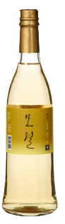
모월인
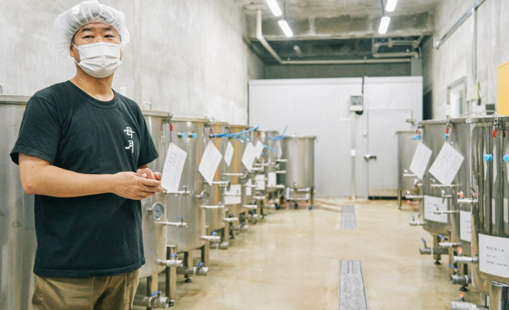
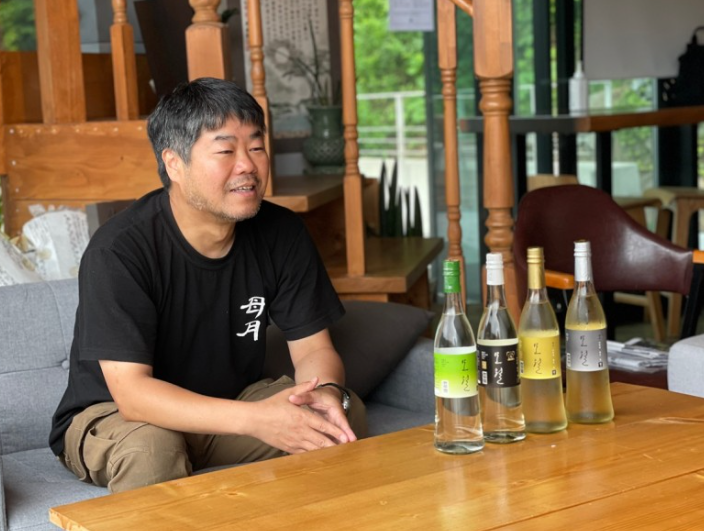
자세히보기
경북 안동시 풍산읍 산업단지 6길 6
명인안동소주 바로가기
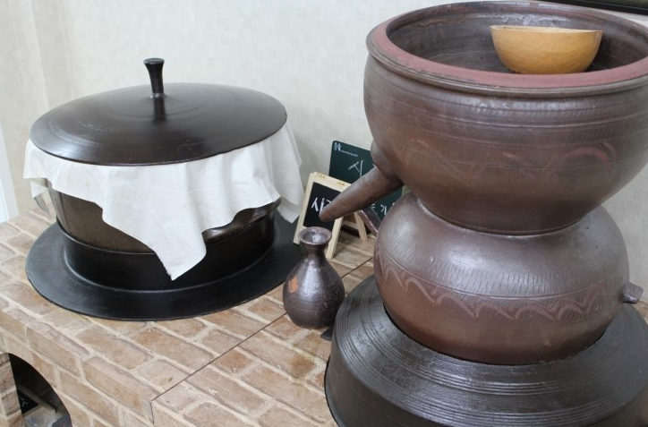
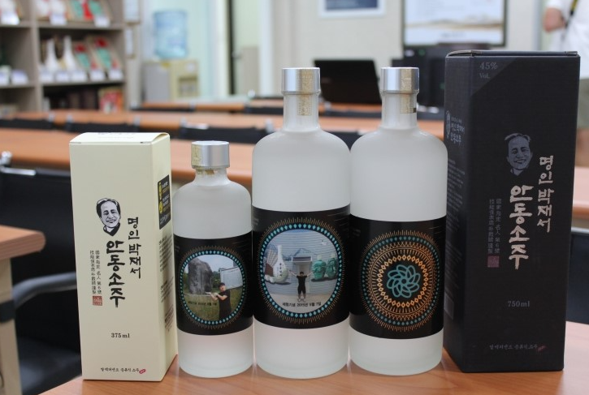
자세히보기
안동은 예로부터 소주의 고장이었다. 명인안동소주의 박재서 대표는 1995년 농림축산식품부로부터 전통식품명인 제 6호로 지정받았다. 안동소주는 한달간 발효하고 숙성시킨 맑은 술을 원주로 삼아 증류하고 이를 다시 1년 이상 숙성시켜 세상에 내놓는다. 많은양의 일반 발효주를 원주로 삼아 증류한 탓에 알콜이 응축되며 깊은 향과 짜릿한 맛을 선사한다. 명인안동소주는 화요, 문배주와 함께 국내 증류식 소주 시장을 이끌고 있으며, 세계적인 술로 널리 인정받고있다.
대표술
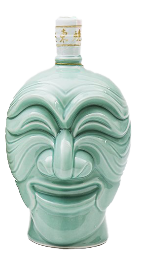
명인안동소주 양반탈
제주도 서귀포 표선면 중산간동로 4726
제주술익는집 바로가기
대표술
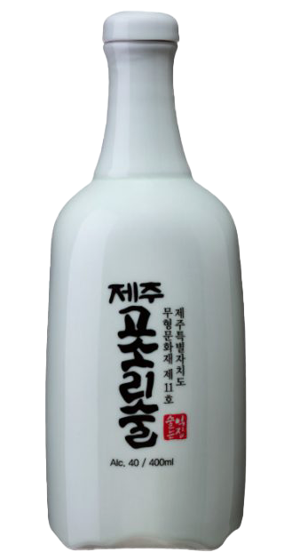
고소리술
자세히보기
제주 술익는 집은 제주성읍민속마을의 맑고 깨끗한 자연환경 속에서 무형문화재 11호 고소리술 전수자들이 4대째 이어오는 전통방식으로 고소리술을 빚어오고 있다. 오메기맑은술을 항아리에서 발효시키고, 고소리술은 옹기 소줏고리에서 직접 내리고 있다. 고소리술은 고려시대 이후 500년 이상 이어져 오는 제주도 전통방식으로 빚어오고 있으며, 더 좋은 우리 술맛을 위해 연구가 계속되고 있다. 제주고소리술은 개성소주, 안동소주와 더불어 우리나라 3대 명주로 알려져있다.
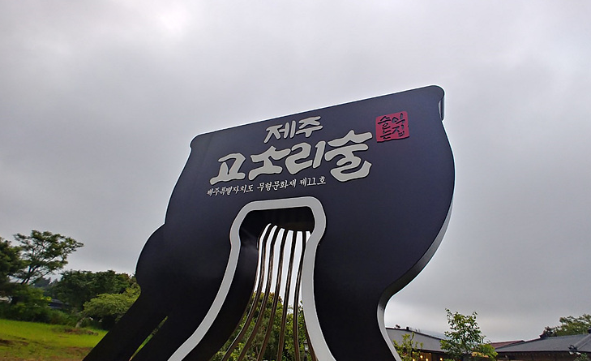
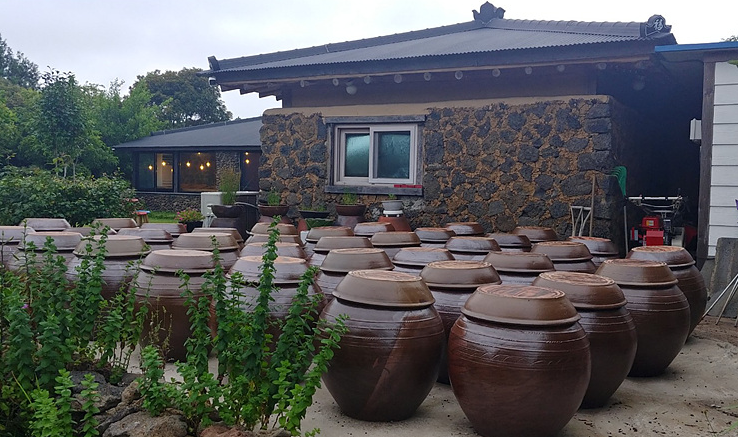
제주도 제주시 애월읍 애월로 283
제주샘주 바로가기
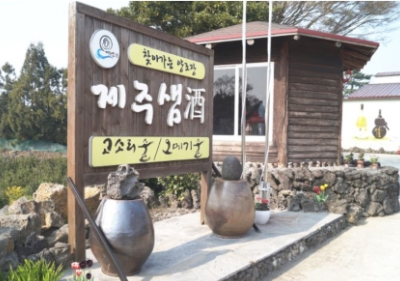
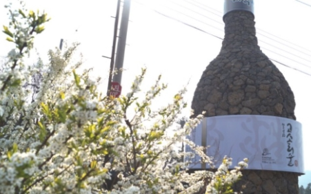
자세히보기
오메기술과 고소리술은 제주를 대표하는 전통술이다. 오메기술은 좁쌀을 떡처럼 반죽한 뒤 끓는 물에 익혀서 만들며, 그 술을 증류한 것이 고소리술이다. 제주샘주가 개발한 오메기술은 한라산 청정자연에서 자란 조릿대를 첨가해 마치 화이트 와인 같은 복합적인 맛과 향으로 미각을 자극한다. 조릿대는 해발 500-600m 지대에서 흔히 볼 수 있는 대나무과 식물로 당뇨와 고혈압에 효능이 있는 것으로 알려져 주목받고 있다.
대표술
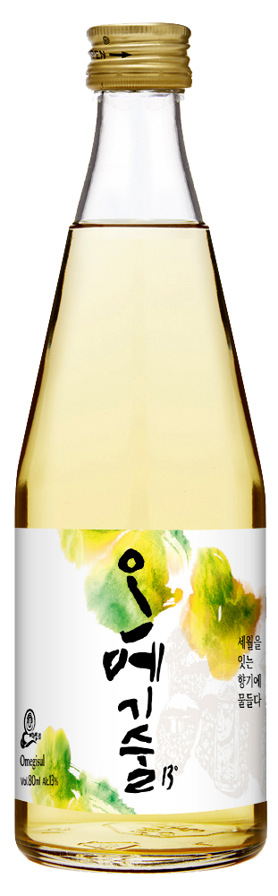
제주 고소리술